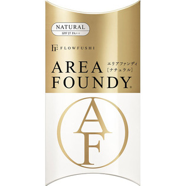

返回列表
产品名称：フローフシ エリアファンディ Natural クリアベージュ

アンリンシャス フローフシ エリアファンディ Natural クリアベージュ ７ｇ
メーカー アンリンシャス
JANコード 4571194362367
商品の特徴
SPF27 PA＋＋
- 成分・分量
- ○内容成分
水、シクロペンタシロキサン、PG、トリエチルヘキサノイン、ジフェニルシロキシフェニルトリメチコン、トリメチルシロキシケイ酸、メチルトリメチコン、トリフルオロアルキルジメチルトリメチルシロキシケイ酸、メトキシケイヒ酸エチルヘキシル、ヒドロキシプロピルシクロデキストリン、イソノナン酸イソトリデシル、PEG-10ジメチコン、PEG-9ポリジメチルシロキシエチルジメチコン、ガーネット末、ビルベリー葉エキス、ポリグルタミン酸、イソステアリン酸、ジエチルアミノヒドロキシベンゾイル安息香酸ヘキシル、t-ブチルメトキシジベンゾイルメタン、ポリヒドロキシステアリン酸エチルヘキシル、（PEG-240／デシルテトラデセス-20／HDI）コポリマー、BG、硫酸Mg、トコフェロール、フェノキシエタノール、（＋／－）、酸化チタン、酸化亜鉛、酸化鉄、酸化スズ、水酸化Al、マイカ、シリカ、アルミナ、メチコン、ジメチコン、ハイドロゲンジメチコン
- 用法及び用量
- １．液をＶＶエリアにポンポンポン。チップで３点に。
２．大和匠筆でポンポンポンとなじませます。